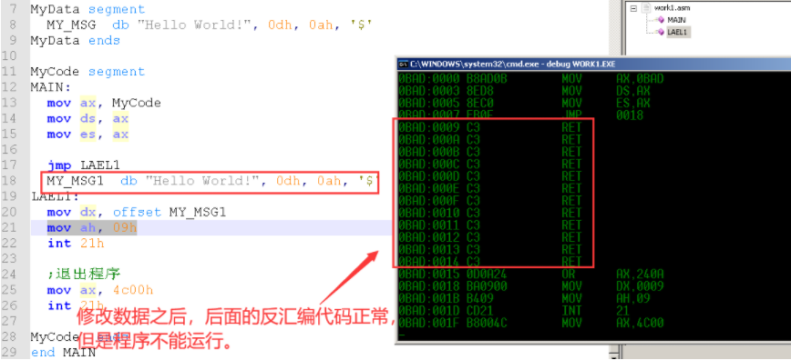

花指令
代码段可以存放数据（需要将数据放置到代码段末尾，同时需要将数据段切换成代码段）。这种方式可用来进行代码加密，在代码段的前面或者中间添加数据代码会被当作操作码（db 0b8h（寄存器）） – 花指令（具有成本低的特点）。
操作示例：
需要保证代码可以正常执行（跳转等），汇编代码就做到简单加密，示例如下：
代码示例：
1 | |
代码执行结果没有问题，汇编代码错乱。但是上面的方法反汇编引擎可以检测到（反汇编引擎遇到跳转指令将指令到跳转目的地址间的代码当做数据，不将其当做指令），所以也可以使用下面的方法：
改进上面的版本，代码如下：
1 | |
有些反汇编引擎会模仿一堆乱算指令后的结果，判断其会不会进行跳转。后来发展到读去文件指定字节数据、接收服务器发送数据来保证一定进行跳转（反汇编引擎就不好判断），这样就做到了低成本代码加密。
升级版本，在跳转指令中添加可以输出数据的代码，有使用的代码：
1 | |

可以做个备份，修改后的文件通过debug进行反汇编分析。
花指令解法
- 使用花指令的程序在进行调试的时候没有效果（只适合静态观察，执行的时候和正常程序一样）。代码量多的时候，不方便调试。
- 静态观察使用花指令的程序，发现使用花指令的位置，使用 “-u 地址”，之后的代码就显示正常，可进行调试。
- 通用使用静态观察，观察使用花指令处的反汇编代码，观察使用花指令的内存前后数据位置，使用二进制工具就该对应的字节数（将其修改为：C3，一个字节的指令（就不在影响后面的反汇编代码） ）
汇编代码重用
避免程序中的代码冗余。
子程序指令
子程序是完成特定功能的一段程序，当主程序（调用程序）需要执行这个功能时，采用call调用指令转移到该子程序的起始处执行，当运行完子程序功能后，采用ret指令返回指令回到主程序继续执行。
方法1：
1 | |
方法2：
1 | |
方法3：使用堆栈保存跳转时的地址，返回的时候进行恢复 – 子程序（一段可以重复执行的代码）
1 | |
使用子程序指令：
call、ret（两个指令不影响寄存器）优化方法3：
1 | |
使用子程序指令
call不需要在写标号，CPU会将下一条指令的地址存储到堆栈中（CPU执行这条指令的时候，根据指令长度可以计算处下一条指令的地址）。自己压入堆栈内的数据需要在执行ret指令之前弹出，否则栈顶的地址会当作返回地址使用。
注意：调用子程序之前，有进行寄存器操作，在子程序中有对寄存器复制等，退出子程序后，之前使用的寄存器数值发生变化。
解决办法：保存寄存器环境（在子程序中入口处将子程序中使用的寄存器入栈），推出前恢复寄存器环境（ret指令执行前，将入栈的寄存器弹出），子程序中使用哪些寄存器就将哪些寄存器入栈即可。
代码示例：
1 | |
函数
子程序中保存环境是函数的概念。
提供子程序的通用性，去除子程序中使用固定的字符串 – 给子程序添加参数。
给子程序添加参数
通过寄存器传递参数（调用约定）。
1 | |
通过寄存器传递参数（调用约定），参数少的时候可取，当传递参数较多的时候，寄存器不够用。可以使用内存（堆栈）传递参数。使用堆栈传递参数的好处：可传递参数较多，子程序使用玩，堆栈可以进行释放，达到重复使用。注意：为了参数访问时方便，参数的顺序（参数存放到栈顶访问时比较方便）需要是 “从右往左依次入栈”。
子程序使用参数时，需要进行计算。在call的时候，栈底保存的是返回值（入栈顺序：参数1 –> 参数2 –> 执行 call 指令，保存的是下一条指令的地址（返回地址）），所以在获取参数1：[sp+2]，获取参数2：[sp+4]。注意：sp不是基址寄存器，不能用来直接访问内存，可使用：mov bp, sp。
注意：跳转到子程序之前入栈的参数，在退出子程序后并不会出栈，会导致堆栈不平衡（子程序使用过多的时候会导致栈爆）。
解决办法：
方法1：在退出子程序后，手动平衡对应字节数的栈空间（调用者平衡栈：C调用约定）。示例：add sp, 4
方法2：在子程序内部返回之前，函数自己平衡对应字节数的栈空间（函数本身进行释放栈空间：stdcall）示例：
pop ax ;比较低效
add sp, 4 ;栈顶需要是返回地址
push ax
ret ; 等价上面两行汇编指令，不影响寄存器
CPU 指令 retn 等价上面四行代码，效率比上面四行要高，使用示例：
retn 4
执行mov ip, [sp]（将栈顶数据，给IP）之前，先执行add sp, 4。CPU可以做到，CPU可以将返回地址存放到暂存寄存器中。
代码示例：
1 | |
局部变量
上面的代码还有需要改进的地方，就是当子程序中，右新的寄存器需要入栈，那么调用参数的部分就需要改动。代码如下：
1 | |
对上面的代码进行修改：入口处保存栈底（可使访问参数时偏移固定）
1 | |
访问栈时，通常使用 bp（其保存的的时当前段的栈低，保存sp的值，不是最初原始的栈底），为了使栈底固定，方便访问。
子程序入口，出口尽量使用固定的格式，方便访问参数，退出时保证堆栈平衡。同时还需要保存寄存器环境（防止子程序内部使用了寄存器影响外面对应的寄存器）。由于能用的通用寄存器不多，在没有空闲寄存器使用的，可将值保存到栈中。
局部变量的访问地址固定问题，需要依次满足下面步骤：
- 保存栈底
- 保存局部变量（手动申请局部变量空间）
- 保存寄存器环境
- 恢复寄存器环境
- 释放局部变量空间（不需要计算局部变量空间大小：mov sp, bp）
- 恢复栈底
一个函数完整的写法，代码示例：
1 | |
返回值（保存运算结果）
方法1（比较麻烦）：
- 可以在子程序外申请一个局部变量
- 将局部变量作为参数传到子程序中
- 将运算结果保存到该局部变量中并返回
方法2（返回值使用一个寄存器保存）：
- 需要提前约定好，一般使用寄存器 ax
- 使用 ax 作为保存返回值的寄存器，寄存器ax 在子程序中就不需要保存环境
段间子程序调用
自动切换段（cs）：call far ptr MY_SUB
自动恢复段（cs）：retf
切换段之前，将之前的CS和IP保存到堆栈中（便于恢复段）。所以访问参数时，需要[bp+6]；跨段访问的函数，在其段中，有想访问其子程序时在使用
call就不通用，通用需要使用call far ptr。需要提前确定是：段间子程序 还是 段内子程序。
代码示例：
1 | |
中断指令
中断（Interrupt）是又一种改变程序执行顺序的方法。
中断请求可以来自处理器外部的中断源，也可以由处理器执行指令引起。
INT
int 21H：Dos功能调用（会打断正在执行的代码），21h号中断是 DOS 提供给用户的用于调用系统功能的中断，它有近百个功能供用户选择使用，主要包括设备管理、目录管理和文件管理三个方面的功能。
中断表（由CPU规定）在内存中，地址是固定的，int 21h（操作系统从中断表中取出地址并调用）
中断函数的返回指令：iret
处理器控制类指令
对标志位进行设置的指令
进位标志操作指令
对标志位进行设置的指令（清除、设置等标志位）
- clc（复位进位标志）： CF = 0
- stc（置位进位标志）：CF = 1
- cmc（求反进位标志）：CF = ~CF
方向标志操作指令
一般在串操作指令中，进行使用。
- cld（复位方向标志）：DF = 0
- std（置位方向标志）：DF = 1
中断标志操作指令
在编写中断服务程序时，需要控制可屏蔽中断的允许和禁止。
- cli（复位中断标志）：IF = 0
- sti（置位中断标志）：IF = 1
对CPU 状态进行控制的指令
nop、lock
空操作指令 nop
CPU不执行任何操作，但占用一个字节存储单元，空耗一个指令执行周期（指令周期：3）。操作码：90H（NOP和XCHG AX,AX的指令代码一样，都是 90H），常用来替换花指令。
执行一条nop指令等价执行一条add（加法）指令。在代码段开始处定义数据会被当做操作码，可用nop的操作码进行填充。填充后就可以被当作代码执行。
db 20 dmp(90h)
NOP常用于程序调试：
- 在需要预留指令空间时用NOP填充
- 代码空间多余时也可以用NOP填充
- 还可以用NOP实现软件延时
段超越前缀指令
在允许段超越的存储器操作数之前，使用段超越前缀指令，将采用指定的段寄存器寻址操作数（操作内存时，需要添加段前缀）。
- CS：使用代码段的数据
- SS：使用堆栈段的数据
- DS：使用数据段的数据
- ES：使用附加段的数据
封锁前缀指令 lock
lock：封锁总线
示例：lock inc word ptr ds:[1000]
类似：InterlockedInceement
这是一个指令前缀，可放在任何指令前。这个前缀使得在这个指令执行时间内，8086 处理器的封锁输出引脚有效，即把总线封锁（CPU接收不到任何电信号），使别的控制器不能控制总线；直到该指令执行完后，总线封锁解除（当两个程序操作同一块内存时就存在同步问题）。
缺点：一条指令只能同步一行代码。
暂停指令 hlt
长时间不去操作操作系统的话，CPU就会进入暂停状态。
HLT：CPU就会进入暂停状态（暂停工作），可以降低电损耗。
- 暂停指令使CPU进入暂停状态，这时CPU不进行任何操作。当CPU发生复位或来自外部的中断时，CPU脱离暂停状态。
- HLT指令可用于程序中等待中断。当程序中必须等待中断时，可用HLT，而不必用软件死循环。然后，中断使CPU脱离暂停状态，返回执行HLT的下一条指令。
交权指令 esc
处理浮点数运算的时候，CPU不会计算，这是CPU会将浮点指令交给浮点处理器执行。这时CPU会等待浮点处理器运算后的结果。
esc 6位立即数, reg/mem
- 浮点协处理器8087指令是与8086的整数指令组合在一起的，当8086发现是一条浮点指令时，就利用ESC指令将浮点指令交给8087执行；
- 实际编写程序时，一般采用易于理解的浮点指令助记符格式。
esc 6, [si] ;实数除法指令：fdiv dword ptr [si]
esc 20h, al ;整数加法指令：fadd st(0),st
等待指令 wait
wait：进入等待状态
- 8086利用wait指令和测试引脚实现与8087（浮点协处理器）同步运行；
- 浮点指令经由8086处理发往8087，并与8086本身的整数指令在同一个指令序列；而8087执行浮点指令较慢，所以8086必须与8087保持同步；
位操作类指令
位操作类指令以二进制位为基本单位进行数据的操作（常用指令）。
逻辑运算指令
AND、OR、XOR、NOT、TEST
逻辑与指令 and
对两个操作数执行逻辑与运算，结果送到目的操作数。只有相 “与” 的两位都是1，结果才是1；否则，”与” 的结果为0。
and reg, imm/reg/mem ;reg <– reg^imm/reg/mem
and mem, imm/reg ;mem <– mem^imm/reg
AND指令设置CF = OF = 0，根据结果设置SF、ZF和PF状态，而对AF未定义。
代码示例：
1 | |
逻辑或指令 or
对两个操作数执行逻辑或运算，结果送到目的操作数。只要相 “或” 的两位有一位是1，结果就是1；否则，结果为0。
or reg, imm/reg/mem ;reg <– reg∨imm/reg/mem
or mem, imm/reg ;mem <– mem∨imm/reg
or指令设置CF = OF = 0，根据结果设置SF、ZF和PF状态，而对AF未定义。
代码示例：
1 | |
逻辑异或指令 xor
对两个操作数执行逻辑异或运算，结果送到目的操作数。只有相 “异或” 的两位不相同，结果就是1；否则，结果为0。
xor reg, imm/reg/mem ;reg <– reg⊕imm/reg/mem
xor mem, imm/reg ;mem <– mem⊕imm/reg
xor指令设置CF = OF = 0，根据结果设置SF、ZF和PF状态，而对AF未定义。
代码示例：
1 | |
逻辑非指令 not
对一个操作数执行逻辑非运算。按位取反，原来是 “0” 的位变为 “1”，原来是 “1” 的位变为 “0”。not指令是一个单操作数指令，not指令不影响标志位。
语法：
- not reg/mem ；reg/mem <– ～reg/mem
代码示例：
1 | |
测试指令 test
对两个操作数执行逻辑与运算，结果不回送到目的操作数（test 只影响标志位）。只有相 “与” 的两位都是1，结果才是1；否则，”与” 的结果为 0。
比较操作数的最低位（二进制位）是否为1，使用 and 会影响目的操作数的值，这个时候就可以使用 test 指令。
代码示例：
1 | |
移位指令
SHL SHR SAR
将操作数移动一位或多位，分成逻辑移位和算术移位，分别具有左移或右移操作（有无符号）。
有符号右移时：负数高位补1，正数补0。
无符号右移时：负数高位补0，正数补0。
逻辑左移 shl
无符号，低位补0
代码示例：
1 | |
逻辑右移 shr
无符号，高位补0
代码示例：
1 | |
算数左移 sal
有符号，低位补0。算数左移 sal 和 逻辑左移 shl 操作码以及结果都一样。
代码示例：
1 | |
算数右移 sar
有符号，高位补符号位1
代码示例：
1 | |
移位指令的操作数
- 移位指令的第一个操作数是指定的被移位的操作数，可以是寄存器或存储单元；
- 后一个操作数表示移位位数，该操作数为1，表示移动一位；当移位位数大于1时，则用cl寄存器值表示，该操作数表达为cl。
mov ax, -1
mov cl, 10
shl ax, cl ;cl中存放移动的次数
移位指令对标志的影响
- 按照移入的位设置进位标志CF；
- 根据移位后的结果影响SF、ZF、PF；
- 对AF没有定义；
- 如果进行一位移动，则按照操作数的最高符号位是否改变，相应设置溢出标志OF：如果移位前的操作数最高位与移位后操作数的最高位不同（有变化），则OF = 1；否则OF = 0。当移位次数大于1时，OF不确定。
循环移位指令
ROL、ROR、RCL、RCR（带进位循环移位（左移、右移）和不带进位循环移位（左移、右移））
将操作数从一端移出的位返回到另一端形成循环，分成不带进位和带进位，分别具有左移或右移操作。
mov ax, 1234h ;源操作数的高8位和低8位进行交换（这个时候就可以使用循环移位）
语法格式示例：
- rol reg/mem,1/cl ;不带进位循环左移
- ror reg/mem,1/cl ;不带进位循环右移
- rcl reg/mem,1/cl ;带进位循环左移
- rcr reg/mem,1/cl ;带进位循环右移
不带进位的循环左移 rol
操作数最左边的位移动到最右边
不带进位的循环右移 ror
操作数最右边的位移动到最左边
代码示例：
1 | |

带进位的循环右移 rcr
操作数最低位位移动到CF标志位中，在将原来CF标志位中的数给操作数的在最高位。
带进位的循环左移 rcl
操作数最高位位移动到CF标志位中，在将原来CF标志位中的数给操作数的在最低位。
对一个32位数左移2位（用两个寄存器表示32位数），两个16进制数不同同时左移，同时左移只有一个CF，低16位的最高位或者高16位的最高位有一位会丢失。这个时候就需要使用 逻辑左移（shl）和 带进位的循环左移（rcl） 配合使用。
- 低16位的最高位进行逻辑左移先移动，移动出来的数据保存到CF中；
- 高16位的最高位进行带进位的循环左移，CF中原来的数据会保存到最高16位的最低位，最高16位的最高位数据保存到CF中。
代码示例：
mov ax, 0ffffh ;低16位
mov bx, 0ffffh ;高16位
shl ax, 1
crl bx, 1
shl ax, 1
crl bx, 1
串操作类指令
CPU 提供了一些快速访问内存进行拷贝数据的指令，只需要告诉CPU需要拷贝数据的地址（偏移CPU会自动计算）以及拷贝次数。接下来由CPU自动操作（无分支，拷贝时不需要跳转，拷贝指令是一条指令，可重复执行）。
- 串操作指令是8086指令系统中比较独特的一类指令，采用比较特殊的数据串寻址方式，在操作主存连续区域的数据时，特别好用、因而常用。
- 重点指令：MOVS 、STOS 、LODS、CMPS、SCAS、REP
串数据类型
- 串操作指令的操作数是主存中连续存放的数据串（String）–即在连续的主存区域中，字节或字的序列
- 串操作指令的操作对象是以字（w）为单位的字串，或是以字节（b）为单位的字节串。
串寻址方式
- 源操作数用寄存器si寻址，默认在数据段ds中，但允许段超越：ds:[si]，拷贝数据后si自动增加（增加的数值为每次拷贝的字节数）。
- 目的操作数用寄存器di寻址，默认在附加段es中，不允许段超越：es:[di]，拷贝数据后di自动增加（增加的数值为每次拷贝的字节数）。
- 每执行一次串操作指令，SI和DI将自动修改：
- ±1（对于字节串）或±2（对于字串）
- 执行指令CLD指令后，DF = 0，地址指针增1或2
- 执行指令STD指令后，DF = 1，地址指针减1或2
代码段开始处设置了ds、es数值，所以在使用时就不用在设置了。
串传送 movs
把字节或字操作数从主存的源地址传送至目的地址（没有操作数）。
- movsb：拷贝1个字节
- movsw：拷贝2个字节
- movsd：拷贝4个字节（80386CPU及以上）
重复前缀指令 rep
串操作指令执行一次，仅对数据串中的一个字节或字量进行操作。但是串操作指令前，都可以加一个重复前缀，实现串操作的重复执行。重复次数隐含在cx寄存器中。
重复前缀分2类，3条指令（rep、repz、repnz）：
- 配合不影响标志的movs、stos（和lods）指令的rep前缀；
- 配合影响标志的cmps和scas指令的repz和repnz前缀。
使用示例：
1 | |
求任何十进制数的余数等价于获取其个位数（处理10或者10的倍数）。
求任何十进制数的余数等价于获取这个数对应的二进制数的最低位（1或者0）。
示例1：10（余数：10 / 10 = 0）、11（余数：11 / 10 = 1）
示例2：4（对应二进制：100 余数：0）、3（对应二进制：11 余数：1）
从数学角度对上面的代码进行优化（指令周期上优化）：拷贝字数为正数的前提下
1 | |
注意：在拷贝数据前需要给方向标志位（DF）：
cld：UP（置DF = 0，IP递增）
std：DN（置DF = 1，IP递减）
上面的示例类似高级语言的 memcpy。
串存储 stos
把al或ax数据传送至目的地址，类似memset。
- stosb（字节串存储）：es:[di] <– al、di <– di±1
- stosw（字串存储）：es:[di] <– al、di <– di±2
代码示例1（1个字节）：
1 | |
代码示例2（10个字节）：
1 | |
串读取 lods
把指定主存单元的数据传送给al或ax，memchr。
- lodsb（字节串读取）：al <– ds:[si] 、si <– si±1
- lodsw（字串读取）：ax <– ds:[si]、si <– si±2
代码示例1（获取1个字节）：
1 | |
串比较 cmps
将主存中的源操作数减去至目的操作数，以便设置标志（影响 ZF标志位，），进而比较两操作数之间的关系，类似memcmp。
- cmpsb（字节串比较）：ds:[si]－es:[si]，si <– si±1，di <– di±1
- cmpsw（字串比较）：ds:[si]－es:[si]，si <– si±2，di <– di±2
代码示例1（实现memcmp）：
1 | |
串扫描 (scas)
scas（scan string）：将al/ax减去至目的操作数（al/ax和内存进行比较），以便设置标志，进而比较al/ax与操作数之间的关系。类似strlen。
代码示例1（实现strlen）：
1 | |
循环控制指令 loop
用寄存器 cx 作为计数器（每执行一次就会自动减1），来控制程序的循环（属于段内SHORT短类型转移,目的地址必须距本指令在-128到+127个字节的范围内）。
功能：(cx)<–(cx)-1，(cx)<>0,则转移至标号处循环执行，直至(cx)=0，继续执行后继指令。
代码示例：
1 | |
注意：在8086CPU时，使用loop指令要比dec、jxx两条指令的指令周期要短，所以更加划算，而在80486CPU及以后，dec、jxx两条指令进行了优化，使用两条指令所花的指令周期要比使用loop指令的指令周期要划算。
伪指令
简单来说就是写给编译器看的指令。微软编译器发明了宏的概念（宏汇编），微软的编译器也叫 “宏编译器”。编写一行伪代码，会按照内部的定式生成各种对应格式的汇编代码。
更多伪指令详见：微软官方伪指令文档
示例代码：
1 | |
高级语言（C、C++）就是汇编代码通过伪指令发展来的。
- 使用伪指令编写函数使用C调用约定时，生成的汇编代码会自动平衡堆栈，自动传递参数。使用stdcall调用约定时，在函数返回时，编译器会根据参数的数量自动平衡堆栈（例如：参数个数为2，伪指令 ret 对应的汇编代码为：ret 0004H）。
- 函数内部使用寄存器需要保存环境，使用伪代码 uses 便可以由编译器自动保存寄存器环境，自动释放寄存器环境（在函数的调用约定后面使用伪指令 uses 即可，例如：**stdcall uses ax bx, 参数1:word …**）。
代码示例：
1 | |
伪指令的好处：代码可读性较强（接近高级语言），参数、判断条件等编写方便，标号也不用写（跳来跳去的）。
操作示例：